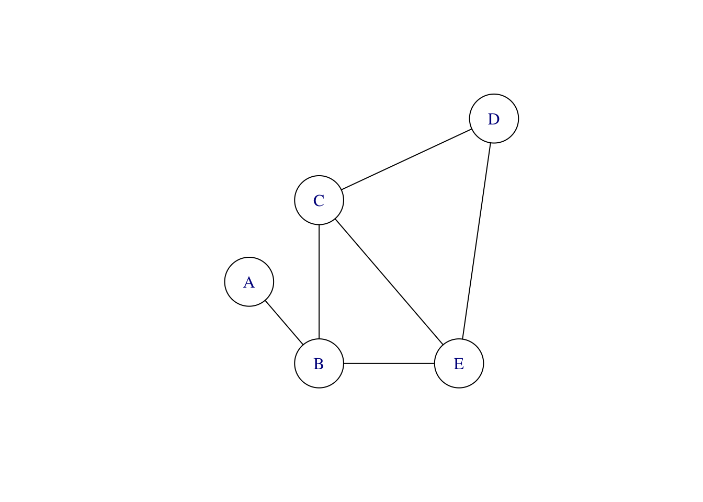
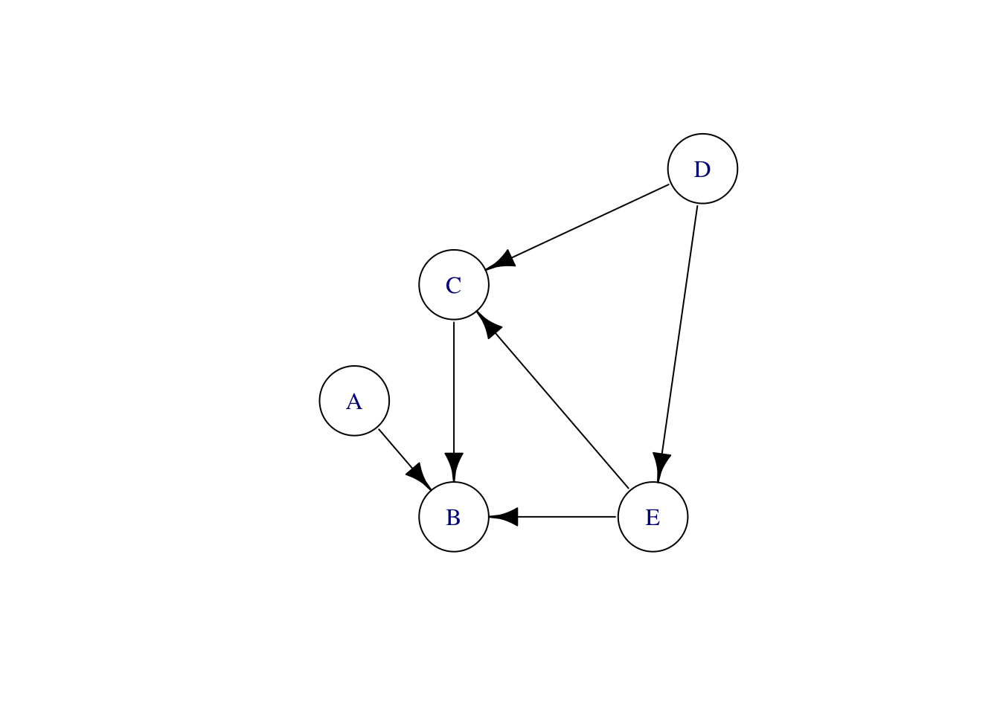
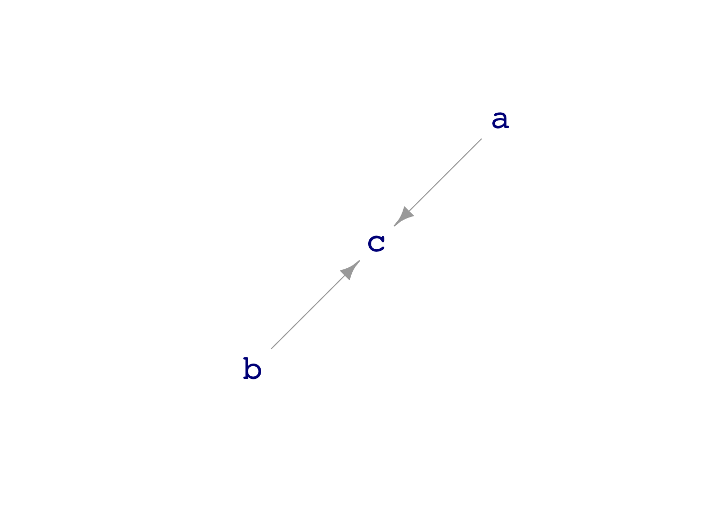

mtcars %>% summarize(v = var(hp)) v
1 4700.867mtcars %>% summarize(s = sd(hp)) s
1 68.56287Variation itself is nature’s only irreducible essence. Variation is the hard reality, not a set of imperfect measures for a central tendency. Means and medians are the abstractions. —– Stephen Jay Gould (1941- 2002), paleontologist and historian of science.
This Lesson introduces two techniques: i) how to quantify variation and ii) how to represent our ideas about causal connections.
A data frame records observations. In a properly constructed data frame, each row holds the observations from one “unit of observation.” Each column stores the values of one “variable,” one type of observation. The “unit of observation” might be a winner in a Scottish Hill race (Hill_racing), it might be a pregnancy and the resulting birth (Gestation), it might be a nurse participating in a survey (Whickham), or any of an infinite range of things. All the rows of a data frame record the same kind of unit of analysis.
Similarly, within a variable, all the recorded observations have the same type denominated in the same units: an age in years, a distance in kilometers, a price in dollars, or whatever.
Although the unit of observation is the same type in every row, the units themselves can differ from one another. Consequently, the values recorded in a variable can differ; they are not all the same: they vary. The words “variable” and “variation” go hand in hand: a variable displays variation.1
Statistical models decompose the response variable into components. Each component is associated with one or more explanatory variables, with one exception. The remaining component, called the “residual,” represents the part of the variation that is still unexplained. In order to make sure that we are not double-counting or omitting variation, it helps to measure the size of variation in each component.
There are many possible ways to measure the “size.” 2 In these Lessons, we will use a standard measure with an awkward name: the “standard deviation.” In practice, however, we will work mainly with the square of the standard deviation, called the “variance.”
Both variance and standard deviation are quantities, that is, a single number with associated units. The standard deviation of any variable has units that are the same as the variable itself. For instance, height is often denominated in cm. Therefore, the standard deviation of height, as it varies from person to person, will also be in cm.
Since the variance is the square of the standard deviation, variance has units of the square of the units of the variable. So the variance of height, for instance, will be measured in cm2.
Remember that variance and standard deviation are summaries of a variable. A variable in a data frame consists of multiple values, one for each row. The variance (or standard deviation) of that variable is a single number (with units), summarizing all of the values in the variable.
The name “variance” is a good reminder of what it measures: the variation.
But why use a squared measure?
Consider this familiar equation: \(A^2 + B^2 = C^2\). The Pythagorean Theorem states that the equation describes the lengths of the sides of a right triangle: \(C\) is the hypotenuse, while \(A\) and \(B\) are the other two sides of the triangle. Surprisingly, the Pythagorean Theorem is highly relevant to statistical models.
OpenIntro chapters 5 & 6 point out that the linear modeling technique produces two columns of numbers: the fitted values and the residuals. These columns have the same number of rows as the data frame used for training. The residuals are the row-by-row numerical difference between the response variable and the fitted values.
These three columns of numbers—the response variable, the fitted model values, and the residuals—are exactly analogous to the three sides of a right triangle. (This is not an obvious fact, but it is important to remember.) In particular, the following numerical relationship is as true for linear models as it is for triangles: \[\text{sd(fitted)}^2 + \text{sd(residuals)}^2 = \text{sd(response)}^2\] where sd() refers to the standard deviation. Consequently, sd()2 is the variance.
The particular mathematical definition of variance and the standard deviation makes the Pythagorean relationship always describe models constructed using the lm() technique. (One of the names used for this technique, least squares, provides a hint that the Pythagorean relationship applies.)
Almost always, people use software for calculations. The relevant R functions are sd() and var() and are used in a summarize() statement, for instance
mtcars %>% summarize(v = var(hp)) v
1 4700.867mtcars %>% summarize(s = sd(hp)) s
1 68.56287Regrettably, the software does not indicate the units of the quantity. For that, read the documentation for the data frame.
To understand what is being calculated by var(), we will describe an algorithm. This algorithm is not numerically efficient, but it highlights the essential feature of variation.
Starting material:
A single column of numbers created by pulling out from the data frame the variable whose variance is to be calculated.
A long roll of paper on which to write numbers, one after the other.
Repeat a basic calculation for each and every row in the column of numbers. To illustrate, let us detail the basic calculation for the kth row.
Take the data value from the kth row, and call it the “reference value.”
Subtract the reference value from each and every other value in the column and square the results.
Write those numbers, all of them, on the roll.
Using the same roll of paper for all, carry out the basic calculation starting at each row in the data column. With this done, the paper roll contains many numbers, each of which is the square difference between the values from two rows in the data column. The mathematically inclined might like to know that there will be exactly \(n(n-1)\) numbers written on the roll. (The term \(n-1\) in that count might perk up the ears of statistics instructors.)
The final result—the variance—will be half the average of the numbers on the roll.
“Standard deviation” is an antique term and is misleading to people who think about “deviation” in the ordinary sense. Nonetheless, “standard deviation” is so widely used in statistics that we can hardly avoid it. To limit the confusion, we will deconstruct the term.
Step 1 in the deconstruction makes clear what “standard” means:
standard deviation \(=\) accepted measure of deviation.
Step 2 in the deconstruction replaces the archaic word “deviation” with something more descriptive:
standard deviation \(=\) accepted measure of variation in the variable.
Often, but not always, our interest in studying data is to reveal the causal connections between variables. Understanding causality is essential, for instance, if we are planning to intervene in the world and want to anticipate the consequences. Interventions are things like “increase the dose of medicine,” “stop smoking!”, “lower the budget,” “add more cargo to a plane (which will increase fuel consumption and reduce the range).”
Historically, mainstream statisticians were hostile to using data to explore causal relationships. (The one exception was experiment, which gathers data from an actual intervention in the world. See Lesson 32.) Statistics teachers encouraged students to use phrases like “associated with” or “correlated with” and reminded them that “correlation is not causation.”
Regrettably, this attitude made statistics irrelevant to the many situations where intervention is the core concern and experiment was not feasible. A tragic episode of this sort likely caused millions of unnecessary deaths. Starting in the 1940s, doctors and epidemiologists saw evidence that smoking causes lung cancer. In stepped the most famous statistician of the age, Ronald Fisher, to insist that the statement should be, “smoking is associated with lung cancer.” He speculated that smoking and lung cancer might have a common cause, perhaps genetic. Fisher argued that establishing causation requires running an experiment where people are randomly assigned to smoke or not smoke and then observed for decades to see if they developed lung cancer. Such an experiment is unfeasible and unethical, to say nothing of the need to wait decades to get a result.
Fortunately, around 1960, a researcher at the US National Institutes of Health, Jerome Cornfield, was able to show mathematically that the strength of the association between smoking and cancer ruled out any genetic mechanism. Cornfield’s work prompted the development of a new area in statistics: “causal inference.”
Causal inference is not about proving that one thing causes another but about formal ways to say something about how the world works that can be used, along with data, to make responsible conclusions about causal relationships.
A core tool in thinking about causal connections is a mathematical structure called a “directed acyclic graph” (DAG, for short). DAGs are one of the most popular ways for statistical thinkers to express their ideas about what might be happening in the real world. Despite the long name, DAGs are very accessible to a broad audience.
DAGs, despite the G for “graph,” are not about data graphics. The “graph” in DAG is a mathematical term of art; a suitable synonym is “network.” Mathematical graphs consist of a set of “nodes” and a set of “edges” connecting the nodes. For instance, Figure 1 shows three different graphs, each with five nodes labeled A, B, C, D, and E.



The nodes are the same in all three graphs of Figure 1, but each graph is different from the others. It is not just the nodes that define a graph; the edges (drawn as lines) are part of the definition as well.
The left-most graph in Figure 1 is an “undirected” graph; there is no suggestion that the edges run one way or another. In contrast, the middle graph has the same nodes and edges, but the edges are directed. An excellent way to think about a directed graph is that each node is a pool of water; each directed edge shows how the water flows between pools. This analogy is also helpful in thinking about causality: the causal influences flow like water.
Look more carefully at the middle graph. There is a couple of loops; the graph is cyclic. In one loop, water flows from E to C to D and back again to E. The other loop runs B, C, D, E, and back to B. Such a flow pattern cannot exist without pumps pushing the water back uphill.
The rightmost graph reverses the direction of some of the edges. This graph has no cycles; it is acyclic. Using the flowing and pumped water analogy, an acyclic graph needs no pumps; the pools can be arranged at different heights to create a flow exclusively powered by gravity. The node-D pool will be the highest, E lower. C has to be lower than E for gravity to pull water along the edge from E to C. The node-B pool is the lowest, so water can flow in from E, C, and A.
Directed acyclic graphs represent causal influences; think of “A causes B,” meaning that causal “water” flows naturally from A to B. In a DAG, a node can have multiple outputs, like D and E, and it might have multiple inputs, like B and C. In terms of causality, a node—like B—having multiple inputs means that more than one factor is responsible for the value of that node. A real-world example: the rising sun causes a rooster to crow, but so can another intruder to the coop.
Often, nodes do not have any inputs. These are called “exogenous factors”at least by economists. The “genous” means “originates from.” “Exo” means “outside.” The value of an exogenous node is determined by something, just not something that we are interested in (or perhaps capable of) modeling. No edges are directed into an exogenous node since none of the other nodes influence its value.
The point of a DAG is to make a clear statement of a hypothesis about causation. Drawing a DAG does not mean that the hypothesis is correct, just that we believe the hypothesis is, in some sense, a possibility. Different people might have different beliefs about what causes what in real-world systems. Comparing their different DAGs can help, sometimes, to discuss and resolve the disagreement.
We are going to use DAGs for two distinct purposes. One purpose is to inform responsible conclusions from data about what causes what. The data on its own is insufficient to demonstrate the causal connections. However, data combined with a DAG can tell us something. Sometimes a DAG includes a causal connection that should create an association between variables. The DAG is incomplete if the association does not appear in the data.
DAGs are also valuable aids for building models. For example, analysis of the paths in a DAG, as in Lesson 30, can tell us which explanatory variables to include and which to exclude from a model if our modeling goal is to represent the hypothetical causal connections.
In these Lessons, we have a second, entirely different, use for DAGs: learning modeling technique. Our approach will be to outfit DAGs with specific formulas representing the mechanism imbued in each node. DAGs equipped with formulas can be used to generate simulated data.3 Training a model on those data leads to a model function that we can compare to the DAG’s formulas. Then check whether the formulas and the model function match. This practice helps us learn what can go right or wrong in building a model, just as practice in an aircraft simulator trains pilots to handle real-world situations in real aircraft.
We start with a simple example. The DAG called dag09 has two exogenous nodes (a and b) and another node, c, that gets input from both a and b.
dag_draw(dag09)
print(dag09)a ~ eps()
b ~ eps()
c ~ binom(2 * a + 3 * b)The dag_draw() command draws a picture of the graph. Printing the dag displays the formulas that set the values of the nodes.
The formulas for dag09 show that the nodes a and b are exogenous, their values set randomly and independently of one another by the exo() function. In contrast, the formula for node c says that the value of c will be a linear combination of the values of a and b, translated into a zero-one format.
Generate simulated data using the sample() function. For instance,
sample(dag09, size=5)# A tibble: 5 × 3
a b c
<dbl> <dbl> <dbl>
1 -0.326 1.17 1
2 0.552 0.619 0
3 -0.675 -0.113 0
4 0.214 0.917 1
5 0.311 -0.223 0Each row in the sample is one trial; in each trial, the node’s formula sets the value for that node. For example, the formula might use the values of other nodes as input. Alternatively, the formula might specify that the node is exogenous, without input from any other nodes.
Models can be trained on the simulated data using the same techniques as for any other data. To illustrate, here we generate a sample of size \(n=10,000\), then fit the model c ~ a + b and summarize by taking the coefficients.
sample(dag09, size=10000) %>%
lm(c ~ a + b, data = .) %>%
confint() 2.5 % 97.5 %
(Intercept) 0.4996543 0.5132192
a 0.1927018 0.2062122
b 0.2945928 0.3081950The coefficients on a and b are inconsistent with the dag09 formulas. This discrepancy suggests the existence of a flaw in the modeling technique. In the following box, we demonstrate another modeling technique that can do the job.
Keep in mind that this is just a demonstration. There is no need to master (or even understand) the calculations presented in this box.
The printed version of dag09 shows that the value of node c is a linear combination of a and b converted into a zero-one, binomial value. Unfortunately, the linear modeling trainer, lm(), is not well-tuned to work with binomial data. Another modeling technique, “logistic regression,” does a better job. The glm() function trains logistic regression models on data.
sample(dag09, size=10000) %>%
glm(c ~ a + b, data = ., family="binomial") %>%
confint()Waiting for profiling to be done... 2.5 % 97.5 %
(Intercept) -0.02973142 0.09550381
a 1.86979872 2.05982255
b 2.97350879 3.23088485When we use the appropriate modeling technique, we can, in this case, recover the coefficients in the DAG formula: 2 for a and 3 for b.
DAGs represent hypotheses about the connections between variables in the real world. They are a kind of scratchpad for constructing alternative scenarios and, as seen in Lesson 28, thinking about how models might go wrong in the face of a plausible alternative causal mechanism.
In this book, we extend the use of DAGs beyond their scope in professional statistics; we use them as simulations from which we can generate data. Such simulations provide one way to learn about statistical methodology.
DAGs are aides to reasoning, scratchpads that help us play out the consequences of our hypotheses about possible real-world mechanisms. However, take caution to distinguish data from DAG simulations from data from reality.
Finding out about the real world requires collecting data from the real world. The proper role of DAGs in real work is to guide model building from real data.
In this course, we sample from DAGs to learn statistical techniques. But never to make claims about real-world phenomena.
Beginners sometimes think that each row in a data frame is a sample. Better to say that each row is a “specimen.” A “sample” is a collection of specimens, the set of rows in a data frame.
The “sample size” is the number of rows. “Sampling” is the process of collecting the specimens to be put into the data frame.
The following command illustrates computing a summary of a sample from dag09.
sample(dag09, size=10000) %>%
glm(c ~ a + b, data = ., family="binomial") %>%
confint()Waiting for profiling to be done... 2.5 % 97.5 %
(Intercept) -0.07393373 0.04945966
a 1.90174806 2.09051562
b 2.81158596 3.05507077An essential question in statistics is how the summary depends on the incidental specifics of a particular sample. DAGs provide a convenient way to address this question since we can generate multiple samples from the same DAG, summarize each, and compare those summaries.
To generate a sample of summaries, re-run many trials of the summary. The do() function automates this process, accumulating the results from the trials in a single data frame: a “sample of summaries.” We will use do() mostly in demonstrations.
do()
In this demonstration, we will revisit a model used earlier in this Lesson to see how much the coefficients vary from one sample to another. Each trial consists of drawing a sample from dag09, training a model, and summarizing with the model coefficients. Curly braces ({ and }) surround the commands needed for an individual trial.
Preceding the curly braces, we have placed do(5) *. This instruction causes the trial to be repeated five times.
do(5) * {
sample(dag09, size=10000) %>%
glm(c ~ a + b, data = ., family="binomial") %>%
coefficients()
} Intercept a b
1 -0.01315189 2.041331 3.049575
2 -0.01027258 1.987569 3.074509
3 0.02787421 1.934953 3.044001
4 -0.03509540 1.973983 2.969853
5 -0.09887196 1.978861 2.971170The five trials are collected together by do() into the five rows of a single data frame. Such a data frame can be considered a “sample of summaries.”
One of the things we will do with a “sample of summaries” is to … wait for it … summarize it. For instance, in the following code chunk, a sample of 40 summaries is stored under the name Trials. Then we will summarize Trials, in this case, to see how much the values of the a and b coefficients vary from trial to trial.
Trials <- do(40) * {
sample(dag09, size=10000) %>%
glm(c ~ a + b, data = ., family="binomial") %>%
coefficients()
}
Trials %>%
summarize(mean_a = mean(a), spread_a = sd(a),
mean_b = mean(b), spread_b = sd(b)) mean_a spread_a mean_b spread_b
1 2.004514 0.04364563 3.012044 0.06410626The result of summarizing the trials is a “summary of a sample of summaries.” This phrase is admittedly awkward, but we will use this technique often: summarizing trials, where each trial is a “summary of a sample” Often, the clue will be the use of do(), which repeats trials as many times as you ask.
::: {.callout-warning} ## For the statistically experienced reader
Warning! This box contains mathematical formulas that are not needed for the course. The formulas might interest mathematically inclined statistics instructors, but others can skip this material.
The algorithm for the variance described previously is not used by any statistical software package; there are much faster ways to arrive at the result. One way to see this is to compare the traditional formula for the variance to the formula version of the above algorithm:
\[\underbrace{\frac{1}{n-1} \sum_{i=1}^n (x_i - \bar{x})^2}_\text{traditional} \ \ \text{versus} \ \ \underbrace{\frac{1}{2n} \sum_{i=1}^n \left[\frac{1}{n-1}\sum_{j\neq i} (x_i - x_j)^2\right]}_\text{our algorithm}\] The inefficiency of the algorithm stems from the double sum. The advantage of the algorithm is conceptual and two-fold:
The \(n-1\) in the formula for the variance comes from the \(j \neq i\) in the inner sum. Why not \(\sum_j=1^n\)? Because that would put \(n\) zeros on the roll and bias the result downward. We want to average the square distance between each value and every other value.
There is no need to introduce the mean \(\bar{x}\) of the values. Of course, \(\bar{x}\) is easy and fast to calculate, so there is no numerical reason to avoid using it in the calculation. There is, however, a philosophical reason based on Stephen J. Gould’s observation, quoted at the start of this Lesson: “Variation is the hard reality. Means are the abstractions.”
The usual definition given for the variance uses the mean as the reference point for calculating deviations. This use imbues the mean with an unjustified veneer of reality. The pairwise square difference algorithm demonstrates that the mean is not needed to calculate the variance; it is just, as Gould says, a mathematical abstraction.
There is a factor \(\frac{1}{2}\) in the formula for the variance based on the pairwise square-differences. The \(\frac{1}{2}\) may seem inelegant to some readers. Stripping out the \(\frac{1}{2}\), the quantity has a name dating from at least 1885: the modulus. Writing the modulus as \(c = 2 s^2\) makes the formula for the gaussian function cleaner than the formula usually given:
\[\underbrace{\frac{1}{\sqrt{2 \pi s^2}} \exp\left[-\frac{(x-m)^2}{2s^2}\right]}_\text{using standard deviation}\ \ \text{vs}\ \ \ \underbrace{\frac{1}{\sqrt{\pi c^2}} \exp\left[-\frac{(x-m)^2}{c^2}\right]}_\text{using modulus}\] In mathematical and scientific nomenclature, “modulus” is roughly synonymous with “size.” For example, in algebra, \(\left|x\right|\) is the modulus of \(x\). “Modulus” is less off-putting than “standard deviation” and less redolent of the unfortunate early ties between statistics and eugenics. Looking back, perhaps “modulus” would have been the better choice for parameterizing the gaussian.
A potential source of confusion is the unfortunate use of the word “variable” in algebra to mean a symbol, like \(x\), that represents a quantity symbolically.↩︎
The OpenIntro text introduced the standard deviation in Chapter 3, where the authors described it as a measure of “spread.” In Chapter 6, OpenIntro introduced the variance as the square of the variance. All this is right, so far as it goes, but it dramatically understates the importance of the two measures. These measures are as crucial to statistical thinking as the Pythagorean Theorem is to geometry.↩︎
The value of exogenous nodes is usually set randomly, without input from the other nodes in the DAG.↩︎